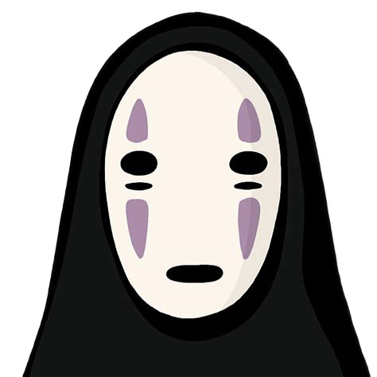

<div class="textcontainer">
<p class="margin"> </p>
<h3>Week 8: CNC Milling, Molding, & Casting</h3>
<!--
<p class="margin"> </p>
<div class="flexrow">
<a id="btn" href="wk8.zip" download>Checkout my files from this week!
</a>
</div>
<p class="margin"></p>
<p class="margin"></p>
<h4>Assignment: Make Something With CNC</h4>
<p class="margin"> </p>
<p class="margin"> </p>
-->
<h4>Assignment: CNC Milling</h4>
<p class="margin"> </p>
<p>
For this week's focus, we had to learn about CNC milling, molding and casting. I decided to attempt a very simple CNC project since it was my first time working with this machine and I was a little intimidated by the many components. I wanted to create something that was utilitarian to effect, so I found a simple design for a coaster and considered an illustration of an artist whose work I really liked. I decided on using the Japanese animator Hayao Miyazaki, and specifically took an image of this character called No Face from the film Spirited Away. It's one of my favorite characters in the film, and I also happen to have a tattoo of this animation, and so I thought it'd be fun to create this into a part.
</p>
<p>
Taking inspiration from Kassia's process of using a vector graphic of a state, I first found an image online of No Face, and I brought that into Inkscape in order to create a vector graphic. I translated the PNG file into a JPEG in Photoshop, and then did a bitmap of the image in Inkscape, cleaned it up and then exported it as an SVG file. It's my first time working with this file format and thereafter bringing it into Fusion 360. So there was some learning here on how to work with the file format correctly. Once I had cleaned up the illustration in Inkscape, I started a new project in Fusion, and I created a small circle, which I extruded into a coaster of about five millimeters, and then imported the SVG file. I formatted the bitmapped Image on top of the coaster, and then I negatively extruded the bitmapped version of No Face so that it would depreciate into the coaster, and you can see the outlines of the face. Once I was happy with the placement of the image and the extrusion amount, I saved the file and prepared it to be exported to Aspire for the CNC.
</p>
<div class="flexrow">

</div>
<p class="margin"> </p>
</div>